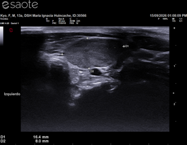
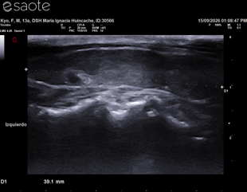
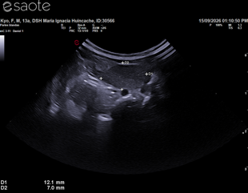
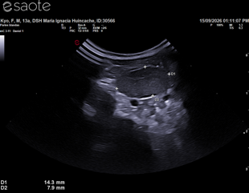

Especie: Felino
Sexo: Macho
Fecha del estudio: 15/09/2026
Procedimiento: Ecografía cervical
🖼️ Imágenes diagnósticas
Imágenes de la ecografía
Capturas del estudio ecográfico realizado a Kyo.

Imagen diagnóstica N.º 1

Imagen diagnóstica N.º 2

Imagen diagnóstica N.º 3

Imagen diagnóstica N.º 4